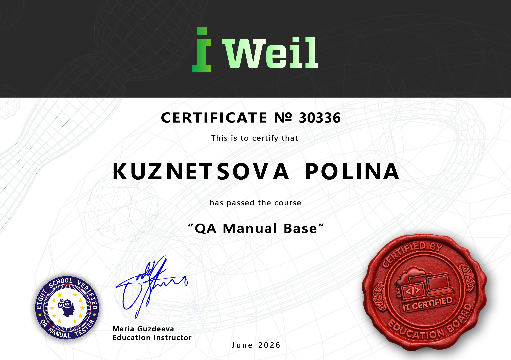

Специализируюсь на ручном тестировании (web/mobile). Моя цель — обеспечение качества ПО через внимательный анализ требований, структурированную тестовую документацию и эффективное взаимодействие с командой.
АВЕЙЛ АЙТИ
Полное функциональное тестирование портала для обеспечения стабильной работы ключевых пользовательских сценариев перед релизом.
Спроектирована тестовая модель. В ходе выполнения Test Run были выявлены критические ошибки в логике процессов регистрации и авторизации новых пользователей. Дефекты документированы в виде подробных баг-репортов, что позволило разработчикам оперативно устранить блокирующие проблемы.
На курсе я научилась использовать нейросети для оптимизации рутины и генерации тестовых идей. Проверьте это прямо сейчас! Введите название любого элемента системы, и мой ИИ-ассистент составит для него базовый чек-лист.
Мой сертификат — это не просто документ о прослушивании лекций. Это подтверждение отработанных практических навыков, инструментов и техник тестирования.
Сертификат №30336 (Июнь 2026)
Курс от iWeil (8Light School Education Board) включал 13 глубоких модулей, охватывающих полный жизненный цикл тестирования.
"Специалист продемонстрировал высокий уровень вовлеченности... успешно применил полученные знания на практике... обладает необходимым фундаментом для успешного карьерного роста."

Работа с системой управления тестированием: ведение документации, планов, функционал по работе с тест-кейсами.
Составление отчетов по дефектам по международным стандартам, анализ причин возникновения.
Использование нейросетей для генерации описаний тест-кейсов, баг-репортов и оптимизации рутины.
В ходе обучения модули №5 и №9 были посвящены применению техник тестирования на реальных интерфейсах. Я уверенно применяю:
Для сокращения количества тестов без потери покрытия.
Поиск уязвимостей на стыке логических условий (поля ввода, лимиты).
Проверка комбинаций параметров для сложной логики.
Использование опыта и интуиции для поиска нестандартных багов.